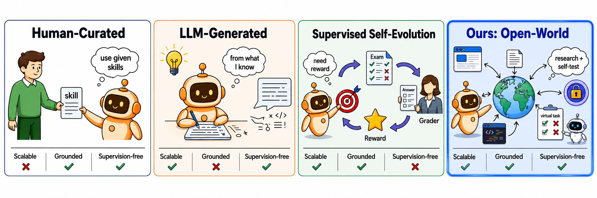
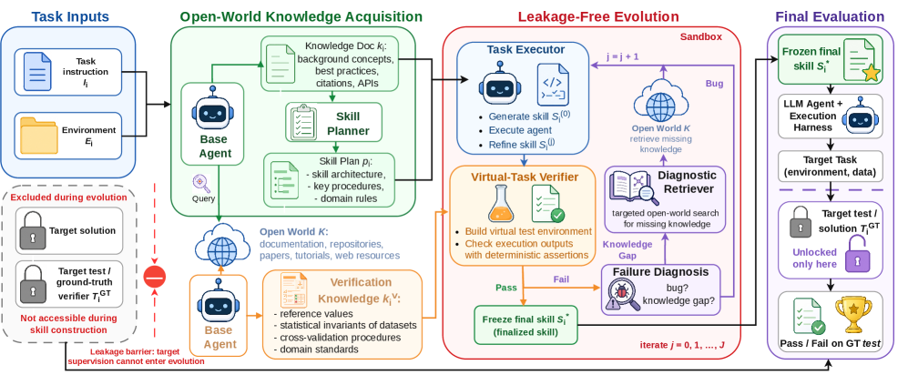
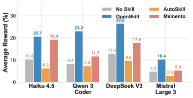

핵심 요약
LLM 에이전트가 배포된 후 스스로 학습하고 진화할 수 있을까? 기존 자가 진화(self-evolution) 연구는 큐레이션된 스킬, 성공적인 궤적, 또는 검증기(Verifier) 신호가 이미 있다고 가정했다. 하지만 현실의 오픈 월드 배포 환경에서는 작업 프롬프트 하나만 주어질 뿐이다.
OpenSkill은 이 문제를 해결한다: 에이전트가 외부 문서·리포지토리·웹에서 지식을 수집하고, 이를 전이 가능한 스킬로 합성한 뒤, 자체 구축한 가상 태스크로 검증한다. 타깃 태스크의 정답은 학습 중에 전혀 사용하지 않는다.

Figure 1: 기존 패러다임(인간 큐레이션, LLM 생성, 지도학습 기반)과 OpenSkill의 오픈 월드 접근법 비교. OpenSkill은 외부 세상에서 스킬을 획득하고 자체 구축한 가상 태스크로 검증하여, 확장성·신뢰성·무감독을 동시에 달성한다.왜 어려운가: 두 가지 근본 한계
기존 자가 진화 에이전트가 직면한 한계는 명확하다.
한계 1: 스킬 구성(Skill Construction)
기존 방법은 인간이 작성한 스킬, 모델이 생성한 지식, 또는 성공적인 궤적에서 추출한 스킬에 의존한다. 이러한 소스는 비용이 많이 들고, 사전 지식에 제한되며, 성공적인 태스크 시도가 있기 전에는 사용할 수 없다.
한계 2: 검증 구성(Verification Construction)
기존 자가 개선 루프는 태스크 수준의 피드백, 자기 피드백, 또는 검증기 출력을 사용하여 동작을 수정한다. 큐레이션된 벤치마크에서는 작동하지만, 오픈 월드 배포에서는 신뢰할 수 있는 피드백이 없을 수 있다.
핵심 질문: 에이전트가 오픈 월드에서 스스로 진화할 수 있는가?
OpenSkill 프레임워크
OpenSkill은 세 단계로 구성된다:

Figure 2: OpenSkill 프레임워크. 에이전트가 외부 리소스에서 오픈 월드 지식을 획득하여 스킬 플랜을 구성하고, 샌드박스에서 반복적으로 생성·실행·수정한다. Leakage Barrier가 타깃 감독을 스킬 구성에서 분리한다.1단계: 오픈 월드 지식 획득 (Open-World Knowledge Acquisition)
- 문서, 리포지토리, 논문, 튜토리얼, 웹 페이지 등에서 접지된 지식(Grounded Knowledge) 과 검증 앵커(Verification Anchors) 를 수집
- 타깃 태스크의 정답·보상·검증기 출력은 사용하지 않음
2단계: 누출 없는 스킬 진화 (Leakage-Free Skill Evolution)
- 수집한 지식으로 스킬 초안 작성
- 자체 구축한 가상 태스크(Virtual Task) 에서 반복적으로 테스트하고 수정
- 가상 태스크는 오픈 월드 지식에 기반하므로, 타깃 정답 없이도 의미 있는 피드백 제공
- 진단 검색기(Diagnostic Retriever)가 버그와 지식 갭을 식별
3단계: 제로샷 타깃 평가 (Zero-Shot Target Evaluation)
- 정제된 스킬을 타깃 에이전트에 그대로 적용
- 타깃 태스크 감독은 최종 평가에만 사용
실험 결과: 3개 벤치마크에서 일관된 최고 성능
SkillsBench (11개 도메인)
- 기존 최강의 폐쇄형 베이스라인 대비 +8.9 / +8.8 포인트 향상
- 11개 도메인(소프트웨어, 오피스, 과학, 미디어, 사이버보안, 금융, 로봇공학, 에너지, 제조, 건강, 수학)에서 스킬 품질이 핵심 제약인 환경
SocialMaze (사회 추론)
- Opus 4.6 기준 82.7%, GPT 5.2 기준 70.7%
- 최강 베이스라인 대비 +0.9 ~ +2.2 포인트 향상
ScienceWorld (대화형 과학 실험)
- 90.0% (Opus) / 85.3% (GPT)
스킬 전이성 (Cross-Model Transfer)

Figure 3: Opus 4.6이 생성한 스킬을 다른 모델에 전이한 결과. OpenSkill 스킬은 모델별 적응 없이도 모든 타깃 모델에서 일관되게 최고 보상을 달성한다.- Opus 4.6으로 생성한 스킬을 수정 없이 다른 모델에 적용해도 최고 성능
- 베이스라인 대비 +5.5% ~ +14.8% 포인트 향상
- 반면 AutoSkill의 스킬은 원래 모델에 과적합되어 전이 시 성능 저하
자체 구축 검증기 (Self-Built Verifier)
- 타깃 정답에 전혀 접근하지 않고도 88.9% 의 ground-truth 테스트 의도를 커버
주요 시사점
1. “학습 루프” 자체를 오픈 월드에서 끌어오기
OpenSkill의 혁신은 단순히 외부 지식을 가져오는 것이 아니라, 검증 신호 자체를 외부 지식으로부터 구성한다는 점이다. 이는 에이전트가 사전 학습된 지식에만 의존하지 않고 지속적으로 적응할 수 있는 길을 연다.
2. 모델 독립적 스킬
한 모델(Claude Opus 4.6)에서 생성한 스킬이 다른 모델에서도 잘 작동한다는 것은, OpenSkill이 만드는 스킬이 특정 모델의 편향이 아닌 구조화된 지식이라는 것을 시사한다.
3. 과도한 정제는 역효과
반복 횟수를 1→3→5→10으로 늘릴 때, 3회에서 최고 성능(82.7%)을 기록하고 이후 성능이 하락했다. 이는 과도한 정제가 가상 테스트 피드백에 과적합된다는 것을 보여준다.
4. 오픈 월드 쿼리와 가상 검증기의 상보성
두 구성 요소를 각각 제거했을 때: 오픈 월드 쿼리 단독 +6.1%p, 가상 검증기 단독 +6.3%p, 둘 다 사용 시 +8.2%p. 둘은 부분적으로 상보적이며, 수정하는 오류가 부분적으로 겹친다.
한계 및 향후 방향
- 가상 태스크의 품질 한계: 자체 구축한 가상 태스크가 실제 타깃 태스크의 복잡성을 완전히 반영하지 못할 수 있음
- 오픈 월드 리소스 품질 의존: 외부 문서/웹의 품질이 낮으면 스킬 품질도 제한
- 비용: 지식 획득과 반복적 스킬 정제 과정에서 다수의 LLM 호출이 필요
- 단일 에이전트 가정: 다중 에이전트 협업 시나리오로의 확장은 향후 과제
결론
OpenSkill은 LLM 에이전트가 사전 지식·큐레이션·피드백 없이도 오픈 월드 리소스만으로 자가 진화할 수 있음을 최초로 체계적으로 보여준 연구다. “학습 루프를 어디서 가져올 것인가”라는 근본적 질문에 대해, OpenSkill은 “열린 세상 자체가 학습 환경이 될 수 있다”는 답을 제시한다.
에이전트가 배포 후에도 계속 학습하고 적응해야 하는 실제 환경(소프트웨어 개발, 사이버보안, 금융 분석 등)에서, OpenSkill의 접근법은 지속 가능한 에이전트 자가 진화의 실마리를 제공한다.
논문: OpenSkill: Open-World Self-Evolution for LLM Agents
저자: Zhiling Yan, Dingjie Song, Hanrong Zhang, Wei Liang, Yuxuan Zhang, Yutong Dai, Lifang He, Philip S. Yu, Ran Xu, Xiang Li, Lichao Sun
소속: Lehigh University, University of Illinois Chicago, University of British Columbia, Vector Institute, Salesforce AI Research, Massachusetts General Hospital and Harvard Medical School